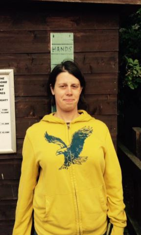

CIWEM accredited MSc. Covers hydrology, natural flood management, GIS, statistical analysis, programming in Python and R, and python programming in ArcGIS. 
These projects are part of the coursework for The University of Leeds, geography department's Programming for Spatial Analyst Modules.
Details of the course content can be found here for the core module, and here for the advanced module.
To view my github website, click here
If the above links fail, my username on github is 3python.
This model, mimics the effects of sheep randomly grazing an imaginary environment. The model does this by specifying a number of agents (sheep) to be generated, and a number of times they will graze (number of iterations). Starting locations for the agent (sheep) positions is then loaded into the script. A grid of numbers is also loaded into the script and converted into a list of number pairs of the format [[y0, x0],[y1, x1],[y2,x2] etc] which is used to represent the topography of the environment the sheep are grazing on. The agents (sheep) are then moved a set number of times in a random direction and each time they move they eat the environment. As a consequence of this, the values of the topography list, which is called environment decreases and the stomach contents of the sheep increases. If the sheep are within a certain distance of each other, they share resources. A visualisation of this model is then run showing the agents moving across the envrionment and a decreasing height of the environment as they eat into it. This model consits of two files. The model file, which is the script to be run and the class file called agentframework which defines the characteristics of the agent class. It consists of a set of functions to define i.e. how the sheep move, eat and share food between themselves. The agent class allows information to be passed into all the agents which enables the agents to know, for example what all the agents have eaten.
Models how water would move and accumulate as it flows down a landscape. Simulated rain falls on the landscape, then half this rain is moved to the adjacent cell with the the steepest downhill gradient. The model is then run the number of times by the user. The results are then plotted on a grid. This enables the user to identify where likely location of rivers and wet areas.
A point shapefile, polygon file and buffer distance is entered into ArcGIS. The model then runs and outputs a polygon shapefile showing all the parts of the original polygon which are within the specified distance from the point. In this instance is it used to measure houses within a certain distance of an explosion point.
This program creates GUIs within ArcGIS which allows the user to run the model by pressing a button and then informs them of the model's progress
This model calculates the number of times a property lies within a certain distance of another property that has been burgeled. It then colour codes the houses based on this value and colour codes the properties accordingly.
Contains some basic database creation code and simple methods for converting data between various formats.
Processing geodata betwen file formats
Brief examples of how to use the pandas and bookeh modules in python using the worked examples from thier websites
Code which analyses a poem, extracts the proper nouns, assumes these are place names and tries to find their locations using googlemaps
CIWEM accredited MSc. Covers hydrology, natural flood management, GIS, statistical analysis, programming in Python and R, and python programming in ArcGIS.
Company Name: Getech
Dates Employed: Apr 2009 – Jul 2017
Employment Duration: 8 yrs 4 mos
Location: Leeds, United Kingdom
During my time at Getech Group Plc, I have worked in 3 roles.
Plate Modeller: Researching the location of tectonic plates through time to contribute to the company's plate model, particularly around South East Asia and western China.
Editing the current plate model via interfacing between notepad++, GPlates and Arc PalaeoGIS.
Developing methodology to reconstruct the depth of oceanic crust in palaeo-reconstructions of past global environments from 150-300 Ma when most oceanic crust of that age has subsequently been destroyed.
Structural Geologist: This role included:
Interpreting geological faults from gravity, magnetic and satellite data in ArcGIS.
Determining the tectonic histories of geological faults through time.
Geologist: This role included:
Producing a series of maps depicting past landscapes from 300 million years ago to present day. This involved extracting and interpreting data from academic papers and translating this into a visual resource using ArcGIS.